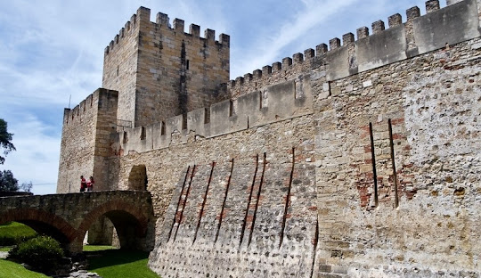

Portugal
Lisboa
Lisboa é a capital de Portugal, situada na costa. Do imponente Castelo de São Jorge, a vista abrange as construções em tons pastel da cidade antiga, o estuário do Tejo e a Ponte 25 de Abril. Perto dali, o Museu Nacional do Azulejo exibe 5 séculos de azulejos decorativos.

Inglaterra
Londres
Londres, capital da Inglaterra e do Reino Unido, é uma cidade do século 21 com uma história que remonta à era romana. Seu centro abriga as sedes imponentes do Parlamento, a famosa torre do relógio do Big Ben e a Abadia de Westminster, local de coroação dos monarcas britânicos.